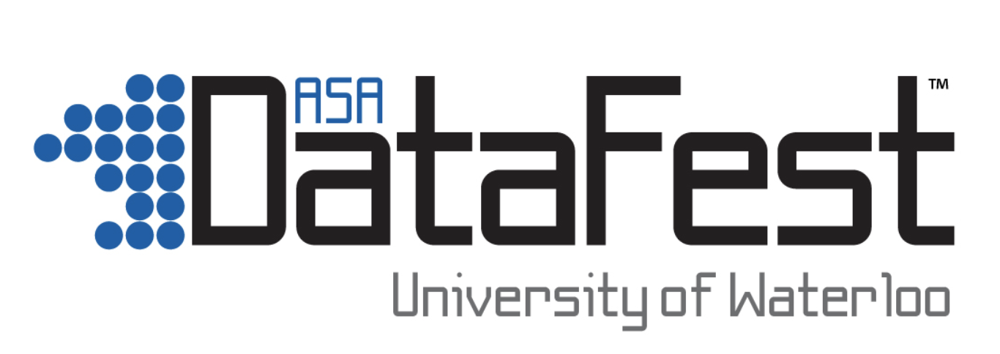
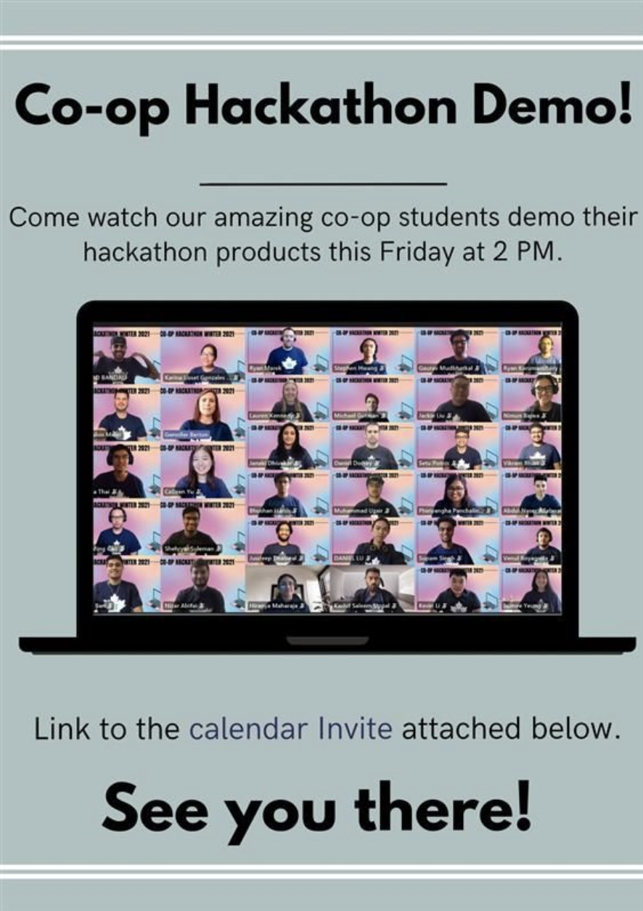

Projects
Take a look at some of the projects I have worked on
From April 30, 2021 to May 2, 2021, I virtually participated in the American Statistical Association's (ASA) DataFest, hosted by the University of Waterloo. The main objective of this data hackathon was for particpants to experiment with data wrangling, analysis, and presentation design in order to find meaning within a large, rich, and complex data set. This year, we were given a data set about drug usage. Due to the rules of this hackathon, I am not allowed to disclose any of the found information within the data set. However, I learned and experimented with many machine learning algorithms in Python. This included Naive Bayes, Principal Component Analysis (PCA), and Correlation based Feature Selection (CFS). I made use of different Python libraries, such as Numpy, Scikit Learn, Seaborn, and many more. This data hackathon was a great learning experience, and gave me the opportunity to learn how to work under pressure, given that the hackathon took place in only 3 days.
In April 2021, Manulife (my co-op employer at the time) hosted a hackathon for their co-op students. We were placed in teams of 5, and were given a problem statement that we needed to figure out how to solve by the end of the week. For my team, our problem statement was focused on detecting online/digital fraud in order to prevent illegitimate transactions from negatively impacting Manulife's customers. Manulife gave us 2 large datasets, with access to Microsoft Azure's services. For the first dataset, we decided to use Azure's Event Hub services in order to seamlessly digest the large dataset that was given to us. This was done by using simple javascript code in order to successfully push all the data into Azure Event Hub. After this was done, we pushed data from Azure Event Hub to Azure Stream Analytics, which is a real-time analytics and complex event-processing engine that is made for analyzing and processing large volumes of data. In order to experiment with more digestible amounts, we used SQL in the Azure query. This was useful for filtering, sorting, and aggregating the data to analyze the data. To better visualize this data, and to make it more presentable, we pushed the Stream Analytics job to PowerBI, and created insightful graphs for the judges to see. For the second dataset we were given, no labels were provided, so we could not understand what the data meant. In order to solve this problem, we used Azure Machine Learning services to perform unsupervised machine learning on the dataset. Since Azure performed many different machine learning algorithms on the dataset, we were given many new insights about the dataset, that the first dataset could not give us. Also, to conclude and verify, we used the Azure Machine Learning designer to split the data and score the data using different modules that were given to us. I learned a lot about how to use Microsoft Azure, and their services that they offer.